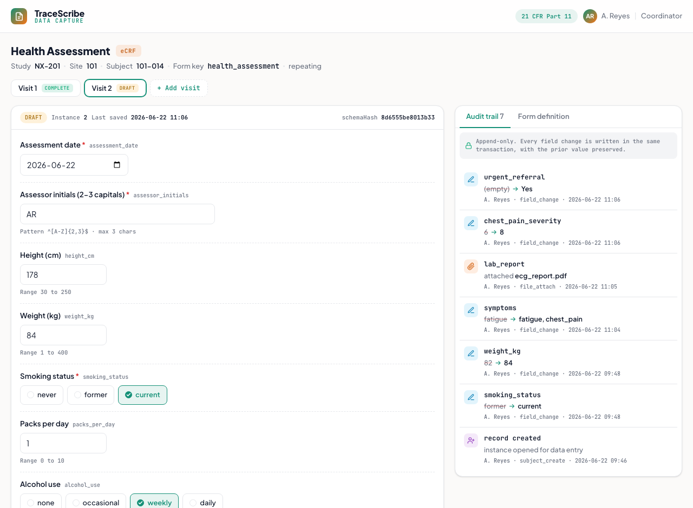

EDC Data Capture
An electronic data-capture system: a schema-defined eCRF you actually fill in, with live conditional branching, validation, repeating visits, and an append-only audit trail. Modeled on a Next.js + Postgres internal capture app.
What it does
Captures clinical data the way a site does. Forms are defined by a schema rather than hand-coded, so conditional branching and validation run live in the browser as you type, and every saved change lands in an append-only audit trail. In the real app the same validation code is also the server's trust boundary, the browser and server never drift.
How it works
- The Health Assessment form is compiled from a schema with 8 field types (date, text + regex, number, choice, multichoice, boolean, textarea, file) and per-field rules (required, ranges, patterns, length).
- show_if branching: fields appear, disappear, and cascade live as you answer (a current smoker reveals packs/day; a chest-pain symptom reveals severity, which reveals urgent referral). Hidden fields are stripped to a fixed point so they never submit stale data.
- Repeating instances: each visit is its own instance with its own data, status, and audit.
- Save draft vs Mark complete: drafts accept partial data; completing enforces every visible required field.
- Append-only audit trail: each save writes one row per changed field (field, old to new value, who, when), the 21 CFR Part 11 story. The real app enforces append-only at the database level.
- A schemaHash pins every submission to the exact form version it was captured under.
The real tool is a Next.js + Postgres data-capture app (YAML-defined forms, optimistic locking, RBAC, file attachments, CSV export). This demo is a self-contained, file://-safe recreation of the capture experience, with the form engine (the show_if evaluator and validator) reimplemented in the browser; synthetic subject, no backend.

Static preview - click to open the live, interactive demo